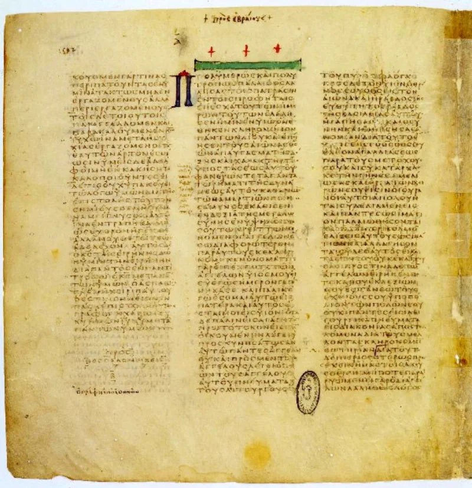
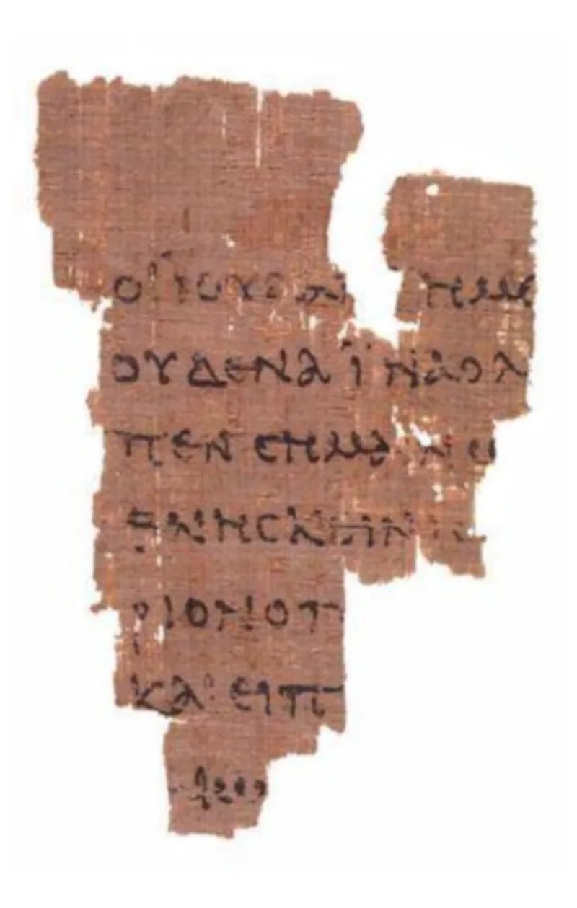

No good counter-argument has been published by LDS scholars.
Books set between 600 and 100 BC are full of New Testament wording. 2 Nephi 4:17 has "O wretched man that I am," which is Romans 7:24.
2 Nephi 9:39 has "to be carnally-minded is death," which is Romans 8:6. 1 Nephi 22:20 quotes Peter's version of Deuteronomy 18 from Acts 3:22-23.
Alma 5:52 echoes John the Baptist in Matthew 3:10.
Moroni 7:45-47 tracks 1 Corinthians 13:4-8 almost word for word. Moroni 10:8-17 does the same with 1 Corinthians 12:4-11.
Nicholas Frederick, a BYU professor, has catalogued roughly 650 New Testament phrases woven through the text. That number comes from inside the church.
FAIR and Frederick both say the New Testament language belongs to the translation, not the plates. Joseph, or a revealed translation aimed at 1820s Bible readers, put Nephite ideas into the scriptural English they knew.
Some parallels may also come from shared Old World sources, or from the same gospel being revealed twice.
Strong for you. The fact is granted at BYU.
The translation-idiom answer concedes that the English is not a literal rendering of an ancient record. And it strains hardest where a whole sermon is built on a New Testament passage.
"How does a prophet writing before Christ quote Paul?"


The New Testament wording came in with the English, for Bible readers of the 1820s.
FAIR and Frederick argue that the New Testament language belongs to the translation. It does not belong to the plates. Joseph Smith, or a revealed translation aimed at 1820s Bible readers, put Nephite ideas into the scriptural English his audience knew.
The King James New Testament itself renders ideas with shared covenant wording. Some parallels may also reflect common Old World sources. Others may reflect real parallel revelation of the same gospel to prophets before Christ.
Strong for you: BYU grants the 650 phrases, and the answer concedes the English is not literal.
The fact is granted even at BYU. Hundreds of distinctly New Testament phrases run through the text. Nicholas Frederick counts about 650.
The translation-idiom defence does not rebut that. It grants that the English text is not a literal rendering of an old record.
And it strains hardest where a New Testament passage gives a whole sermon its shape. Moroni 7 and Moroni 10 are the clearest cases.